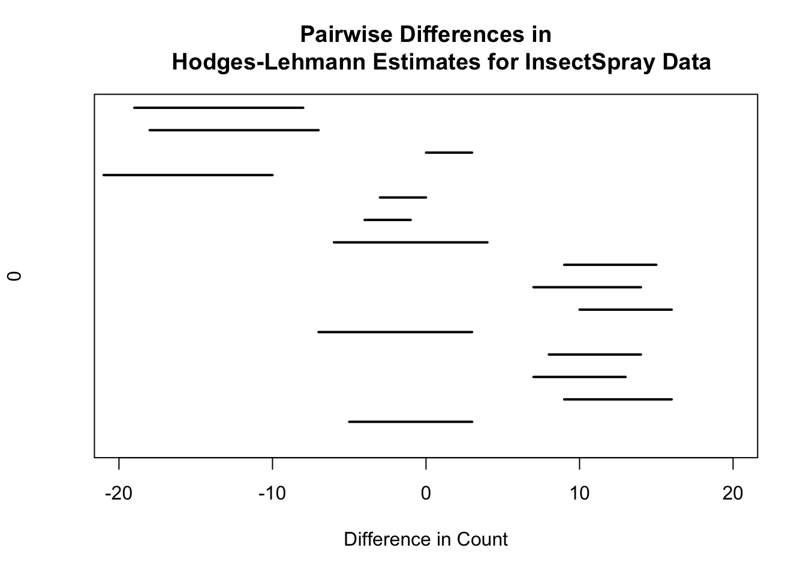
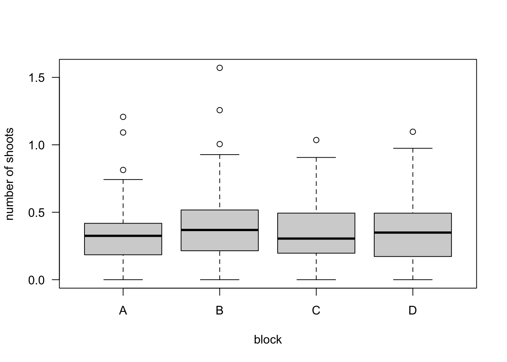

Chapter 4 Rank Tests for Multiple Groups
We can roughly think of the tests discussed in Chapter 3 as being related to the well-known parametric tests shown in the table below. \[\begin{eqnarray} \textbf{Parametric Test} & & \qquad \textbf{ Nonparametric Tests } \nonumber \\ & & \nonumber \\ \textrm{One-Sample t-test} & & \qquad \textrm{Wilcoxon Signed Rank/Sign Test} \nonumber \\ \textrm{Two-Sample t-test} & & \qquad \textrm{Wilcoxon Rank Sum/Normal Scores/Median Test} \nonumber \end{eqnarray}\]
The Kruskal-Wallis test can be though of as the nonparametric analogue of one-way analysis of variance (ANOVA).
For \(K \geq 3\) groups, one-way ANOVA considers the analysis of observations arising from the following model \[\begin{equation} Y_{kj} = \mu_{k} + \varepsilon_{kj}, \qquad j=1,\ldots, n_{k}; k=1,\ldots,K \tag{4.1} \end{equation}\] where it is often assumed that \(\varepsilon_{kj} \sim \textrm{Normal}(0, \sigma^{2})\).
Usually, the one-way ANOVA hypothesis of interest is something like \[\begin{equation} H_{0}: \mu_{1} = \mu_{2} = \ldots = \mu_{K} \tag{4.2} \end{equation}\] which is often referred to as the homogeneity hypothesis.
A test of the hypothesis (4.2) is based on decomposing the observed variation in the responses \(Y_{kj}\): \[\begin{eqnarray} \underbrace{ \sum_{k=1}^{K}\sum_{j=1}^{n_{k}} (Y_{kj} - \bar{Y}_{..})^{2}}_{SST} &=& \sum_{k=1}^{K}\sum_{j=1}^{n_{k}} (\bar{Y}_{k.} - \bar{Y}_{..})^{2} + \sum_{k=1}^{K}\sum_{j=1}^{n_{k}} (Y_{kj} - \bar{Y}_{k.})^{2} \nonumber \\ &=& \underbrace{\sum_{k=1}^{K} n_{k} (\bar{Y}_{k.} - \bar{Y}_{..})^{2}}_{SSA} + \underbrace{\sum_{k=1}^{K}\sum_{j=1}^{n_{k}} (Y_{kj} - \bar{Y}_{k.})^{2}}_{SSE} \tag{4.3} \end{eqnarray}\] where \(\bar{Y}_{k.} = \frac{1}{n_{k}}\sum_{j=1}^{n_{k}} Y_{kj}\) and \(\bar{Y}_{..} = \frac{1}{K}\sum_{k=1}^{K} \bar{Y}_{k.}\).
Large values of \(SSA = \sum_{k=1}^{K} n_{k} (\bar{Y}_{k.} - \bar{Y}_{..})^{2}\) provide evidence against the null hypothesis (4.2). The alternative hypothesis here is that there is at least one pair of means \(\mu_{h}, \mu_{l}\) such that \(\mu_{h} \neq \mu_{l}\).
4.1 The Kruskal-Wallis Test
4.1.1 Definition
Instead of assuming (4.1) for the responses \(Y_{kj}\), a nonparametric way of thinking about this problem is to instead only assume that \[\begin{equation} Y_{kj} \sim F_{k} \end{equation}\] That is, \(Y_{k1}, Y_{k2}, \ldots, Y_{kn_{k}}\) is an i.i.d. sample from \(F_{k}\) for each \(k\).
A nonparametric version of the one-way ANOVA homogeneity hypothesis is \[\begin{equation} H_{0}: F_{1} = F_{2} = \ldots = F_{K} \tag{4.4} \end{equation}\]
The “shift alternative” in this case can be stated as \[\begin{equation} H_{A}: F_{k}(t) = F(t - \Delta_{k}), \quad \textrm{ for } k = 1, \ldots K \quad \textrm{ and not all $\Delta_{k}$ equal} \end{equation}\]
The Kruskal-Wallis test statistic is similar to the SSA term (defined in (4.3)) in the one-way ANOVA setting.
Rather than comparing the group-specific means \(\bar{Y}_{k.}\) with the overall mean \(\bar{Y}_{..}\), the Kruskal-Wallis test statistic compares the group-specific rank means \(\bar{R}_{k.}\) with their overall expectation under the null hypothesis.
The Kruskal-Wallis test statistic \(KW_{N}\) is defined as \[\begin{equation} KW_{N} = \frac{12}{N(N-1)}\sum_{k=1}^{K} n_{k}\Big( \bar{R}_{k.} - \frac{N + 1}{2} \Big)^{2}, \quad \textrm{ where } N = \sum_{k=1}^{K} n_{k} \tag{4.5} \end{equation}\]
In (4.5), \(\bar{R}_{k.}\) is the average rank of those in the \(k^{th}\) group \[\begin{equation} \bar{R}_{k.} = \frac{1}{n_{k}} \sum_{j=1}^{n_{k}} R_{kj}(\mathbf{Z}), \end{equation}\] where \(\mathbf{Z}\) denotes the pooled-data vector and \(R_{kj}(\mathbf{Z})\) denotes the rank of \(Y_{kj}\) in the “pooled-data ranking”.
What is the expectation of \(\bar{R}_{k.}\) under the null hypothesis (4.4)?
Again, if the null hypothesis is true, we can treat all of our responses \(Y_{kj}\) as just an i.i.d. sample of size \(N\) from a common distribution function \(F\).
Hence, as we showed in (3.2) from Chapter 3, \(E\{ R_{kj}(\mathbf{Z}) \} = (N+1)/2\) under the assumption that the data are an i.i.d. sample from a common distribution function.
So, the intuition behind the definition of \(KW_{N}\) is that the differences \(\bar{R}_{k.} - \frac{N + 1}{2}\) should be small whenever the homogeneity hypothesis (4.4) is true.
When \(K=2\), the following relationship between the Kruskal-Wallis statistic \(KW_{N}\) and the Wilcoxon rank sum test statistic \(W\) from Chapter 3 holds. \[\begin{equation} KW_{N} = \frac{12}{mn(N+1)}\Big( W - \frac{n(N+1)}{2} \Big)^{2}. \tag{4.6} \end{equation}\]
Hence, the p-value from a Kruskal-Wallis test and a (two-sided) WRS test should be the same when \(K = 2\).
However, you cannot directly perform a one-sided test using the Kruskal-Wallis test.
- Exercise 4.1 If \(K=2\), show that equation (4.6) holds.
An Example
| Group | Y | Rank |
|---|---|---|
| Group 1 | 1.00 | 8 |
| Group 1 | -1.20 | 2 |
| Group 1 | -1.50 | 1 |
| Group 2 | 0.00 | 5 |
| Group 2 | -0.10 | 4 |
| Group 2 | 1.10 | 9 |
| Group 3 | 0.90 | 7 |
| Group 3 | -0.40 | 3 |
| Group 3 | 0.60 | 6 |
- Consider the data shown in the table. In this case, \(N = 9\), \(\bar{R}_{1.} = 11/3\), \(\bar{R}_{2.} = 6\), and \(\bar{R}_{3.} = 16/3\). The Kruskall-Wallis statistic is \[\begin{equation} KW_{N} = \frac{1}{2}\Big\{ 3(11/3 - 5)^{2} + 3(6 - 5)^{2} + 3(16/3 - 5)^{2} \Big\} = 13/9 \nonumber \end{equation}\]
4.1.2 Asymptotic Distribution and Connection to One-Way ANOVA
The Kruskal-Wallis statistic \(KW_{N}\) has an asymptotic chi-square distribution with \(K-1\) degrees of freedom under the null hypothesis (4.4).
This follows from the fact that \((\bar{R}_{k.} - (N+1)/2)\) is approximately normally distributed for large \(n_{k}\).
R uses the large-sample approximation when computing the p-value for the Kruskal-Wallis test.
The Kruskal-Wallis test can also be thought of as the test you would obtain if you applied the one-way ANOVA setup to the ranks of \(Y_{kj}\).
The one-way ANOVA test is based on the value of SSA where, as in (4.3), SSA is defined as \[\begin{equation} SSA = \sum_{k=1}^{K} n_{k} (\bar{Y}_{k.} - \bar{Y}_{..})^{2} \nonumber \end{equation}\]
You then reject \(H_{0}\), when \(SSA/SSE = SSA/(SST - SSA)\) is sufficiently large.
Notice that if we computed SSA using the ranks \(R_{kj}( \mathbf{Z} )\) rather than the observations \(Y_{kj}\), we would get: \[\begin{eqnarray} SSA_{r} &=& \sum_{k=1}^{K} n_{k} (\bar{R}_{k.} - \bar{R}_{..})^{2} \nonumber \\ &=& \sum_{k=1}^{K} n_{k} \Big( \bar{R}_{k.} - \frac{N+1}{2} \Big)^{2} \nonumber \\ &=& \frac{N(N-1)}{12} KW_{N} \tag{4.7} \end{eqnarray}\]
If you were applying ANOVA to the ranks of \(Y_{kj}\), \(SST_{r}\) would be the following fixed constant: \[\begin{equation} \textrm{SST}_{r} = \frac{N(N + 1)(N-1)}{12} \nonumber \end{equation}\]
So, any test of the homogeneity hypothesis would be based on just the value of \(SSA_{r}\) which, as we showed in (4.7), is just a constant times the Kruskal-Wallis statistic.
4.2 Performing the Kruskal-Wallis Test in R
- We will look at performing Kruskal-Wallis tests in R by using the “InsectSprays” dataset.
## count spray
## 1 10 A
## 2 7 A
## 3 20 A
## 4 14 A
## 5 14 A
## 6 12 AThis dataset has 72 observations.
The variable count is the number of insects measured in some agricultural unit.
The variable spray was the type of spray used on that unit.
You could certainly argue that a standard ANOVA is not appropriate in this situation because the responses are counts, and for count data, the variance is usually a function of the mean.
A generalized linear model with a log link function might be more appropriate.
Applying a square-root transformation to count data is also a commonly suggested approach. (The square-root transformation is the “variance-stabilizing transformation” for Poisson-distributed data).

- Let us perform a test of homogeneity using both the one-way ANOVA approach and a Kruskal-Wallis test
## Analysis of Variance Table
##
## Response: sqrt(count)
## Df Sum Sq Mean Sq F value Pr(>F)
## spray 5 88.438 17.6876 44.799 < 2.2e-16 ***
## Residuals 66 26.058 0.3948
## ---
## Signif. codes: 0 '***' 0.001 '**' 0.01 '*' 0.05 '.' 0.1 ' ' 1## [1] 1.510844e-10- Notice that applying the square root transformation does not affect the value of the Kruskal-Wallis statistic or the Kruskal-Wallis p-value.
##
## Kruskal-Wallis rank sum test
##
## data: count by spray
## Kruskal-Wallis chi-squared = 54.691, df = 5, p-value = 1.511e-10- This invariance to data transformation is not true for the standard one-way ANOVA.
## Analysis of Variance Table
##
## Response: count
## Df Sum Sq Mean Sq F value Pr(>F)
## spray 5 2668.8 533.77 34.702 < 2.2e-16 ***
## Residuals 66 1015.2 15.38
## ---
## Signif. codes: 0 '***' 0.001 '**' 0.01 '*' 0.05 '.' 0.1 ' ' 14.3 Comparison of Specific Groups
A Kruskal-Wallis test performs a test of the overall homogeneity hypothesis \[\begin{equation} H_{0}: F_{1} = F_{2} = \ldots = F_{K} \end{equation}\]
However, a rejection of the homogeneity hypothesis does not indicate which group differences are primarily the source of this rejection nor does it provide any measure of the “magnitude” of the differences between each of the groups.
Dunn’s test is the suggested way to compute pairwise tests of stochatic dominance.
Performing a series of pairwise Wilcoxon rank sum test can lead to violations of transitivity. For example, group A is “better” than B which is better than C, but group C is better than A.
In R, Dunn’s test can be performed using the dunn.test package.
In traditional one-way ANOVA one often reports pairwise differences in the means and their associated confidence intervals.
In the context of a Kruskal-Wallis test, one could report pairwise differences in the Hodges-Lehmann estimate though other comparisons may also be of interest.
One nice approach is to use the proportional odds model interpretation of the Kruskal-Wallis test and then report the difference in the estimated proportional odds coefficients. See Section 7.6 of http://hbiostat.org/doc/bbr.pdf for more details on the proportional odds model.

4.4 An Additional Example
- We will use the “cane” dataset from the boot package.
## n r x var block
## 1 87 76 19 1 A
## 2 119 8 14 2 A
## 3 94 74 9 3 A
## 4 95 11 12 4 A
## 5 134 0 12 5 A
## 6 92 0 3 6 AThese data come from a study trying to determine the susceptibility of different types of sugar cane to a particular type of disease.
The variable n contains the total number of shoots in each plot.
The variable r containes the total number of diseased shoots.
We can create a new variable prop that measures the proportion of shoots that are diseased.
- You could certainly argue that a logistic regression model is a better approach here, but we will analyze the transformed proportions using the arcsine square root transformation.
cane$prop.trans <- asin(sqrt(cane$prop))
boxplot(prop.trans ~ block, data=cane, las=1, ylab="number of shoots")
##
## Kruskal-Wallis rank sum test
##
## data: prop by block
## Kruskal-Wallis chi-squared = 1.1355, df = 3, p-value = 0.76854.5 Additional Reading
- Additional reading which covers the material discussed in this chapter includes:
- Chapters 6 from Hollander, Wolfe, and Chicken (2013)
References
Hollander, Myles, Douglas A Wolfe, and Eric Chicken. 2013. Nonparametric Statistical Methods. Vol. 751. John Wiley & Sons.